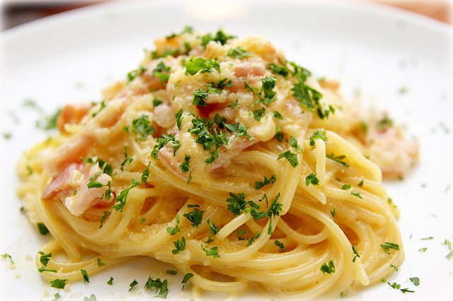

Lust auf was Neues?

Frisches Gemüse vs. Tiefkühlgemüse - Was ist besser?

Diese Frage ist pauschal schwierig zu beantworten. Fakt ist, dass es in jedem Fall die bessere Lösung ist, auf Tiefkühlgemüse aus dem Supermarkt zurückzugreifen, statt tagelang gelagertes frisches Gemüse zu verwenden. Wird das gekaufte Gemüse aus der Theke nicht zügig verarbeitet, ist es zugunsten der Nährstoffversorgung immer besser, auf tiefgekühlte Ware zurück zu greifen.